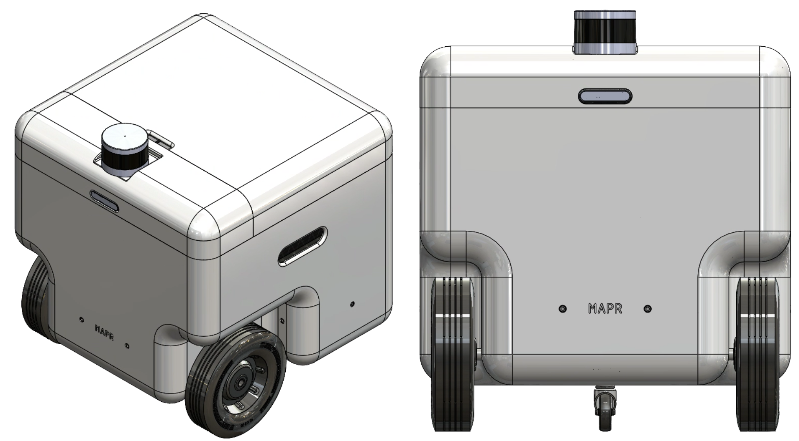
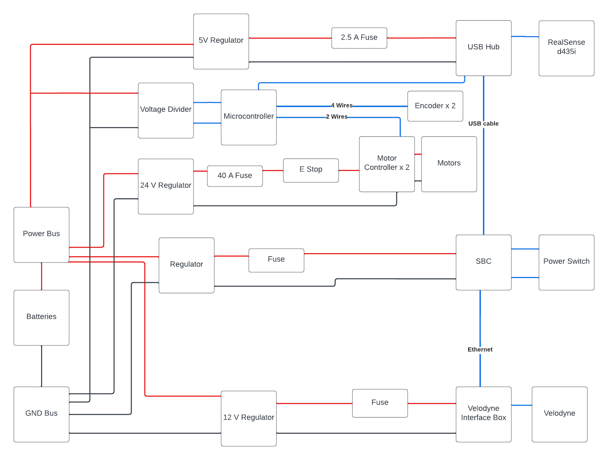
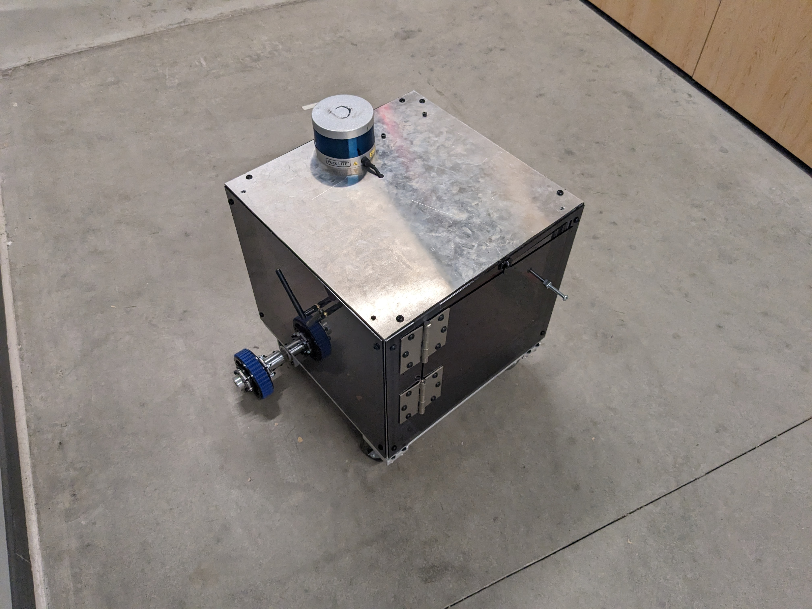

My school offers a two-part course on building robots. The first part focuses on defining the robot and all of its requirements, while the second focuses on building the system you described. Within a group of four, your task is to make this robot and get it to pass as many of the requirements you set out as possible.
There were no boundaries to what form or function your robot took, as long as you could build it within your budget. Ideas ranged from an autonomous food dispensary to video game assistance tools. My group opted to go for an indoor mapping and delivery robot. Thus, MAPR ( Mapping And Payload Robot) was born.

Amongst the four of us, I focused on implementing controls and configuring the drivetrain. We opted to use ROS, so most of my software work was focused on creating the “glue” to connect existing ROS packages to our custom components. Before I get into that, a bit about the system.
Parts List
- Khadas Edge 2 (Compute)
- Velodyne VLP 16
- Arduino Mega
- Talon SRX
- Redline motors and gearboxes
- Redline incremental encoders (a source of much pain)
Based on our collective experience, our initial intent was to use standard FRC motor controllers. The Talon SRX is fairly common and was more than capable of driving our motors, however, interfacing the system with the rest of our electronics was not as straightforward as we initially thought. Sure if you use a RoboRIO and other FRC components it’s well documented trying to jury-rig our system to communicate with it was pretty cumbersome. That was the first thing to go.
Parts List 2
- Khadas Edge 2 (Compute)
- Velodyne VLP 16
- Arduino Mega
Talon SRXBTS 7960- Redline motors and gearboxes
- Redline incremental encoders
From there we switched to the BTS 7960 motor controller. We found it on Amazon for a relatively low price and after eating into our budget with the Talons we wanted something a little less expensive. We learned the hard way the thin line between “inexpensive” and cheap. While we ended up sticking with the controllers. We burned a considerable amount of time trying to determine what was wrong with our code to operate them when in reality several of the controllers were dead on arrival.
The next issue was the encoders. These caused our next major change. Our encoders used magnets on the back of the motor shaft, however, our output shaft had a 60:1 gear reduction. Combined, this meant we were getting several thousand encoder ticks per rotation, too much for our poor little Mega to handle. After more troubleshooting, we bit the bullet and purchased a Teensy 3.1. The faster clock speed and dedicated hardware for reading encoders resolved our problems. A simpler solution (and one that may have been advantageous with later issues) would have been leveraging absolute rather than incremental encoders.
Parts List 3
- Khadas Edge 2 (Compute)
- Velodyne VLP 16
Arduino MegaTeensy 3.1- BTS 7960
- Redline motors and gearboxes
- Redline incremental encoders
After these, there weren’t many hardware changes, at least towards the drive train. Throughout this process, I had been working on the connective tissue between the ROS packages and our hardware. To that end I made a few software packages.

Package 1 : Drivetrain
This package read commands on the /cmd_vel topic, from teleop_twist or navigation, and published target wheel velocities using inverse kinematics. (The system was differential drive btw). This lived on the Khadas which ran our main high-level code.
Package 2: Drivetrain but actually
This package listened to the wheel velocity topics from package one and executed controls to drive the wheels at said speed. We used a PI controller with a high P gain and a little I gain. With the higher-level controller managing the overall trajectory, and external position sensing, it wasn’t important to have an incredibly accurate speed command.
Package 3: GUI
The last package was an RQT-based GUI to control the robot’s state and set target positions. This one was pretty straightforward I leveraged existing RQT plugins and created a couple of bespoke ones to display information and controls specific to our robot like the state (Mapping, on delivery, etc).
How did it go?
Poorly. Unfortunately, with time constraints we never managed to resolve a pretty significant issue. Our Lidar was prone to drift which meant our localization broke down, and the robot could not find its way to any destination. Its recovery behaviour also exacerbated the issue and pushed the map fully out of alignment. The time we lost on motor controller implementation and the encoder debugging ended up preventing us from seeing these issues earlier.

In the future
My biggest takeaway from this project were two-fold:
You get what you pay for, and you pay for what you get.
Getting more robust components would have saved us a lot of time which ended up being a lot more valuable than the budget. We ended up still having a sizeable chunk left at the end, and we likely would have had a better system had we splurged on motor controllers and encoders. Things that are fundamental to your system should be prioritized the same way in budgeting.
Integrate immediately
Because we had all these pieces working in parallel we were under the assumption that when we tied them together they would work as well. Clearly not the case. Going forward I think it makes the most sense to create a small piece of each component as is necessary to connect them and then do so as soon as possible. From there you can incrementally improve the system. While one individual system may not be as good as it could have been with a parallel independent design, the whole will likely turn out better.